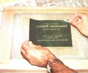

How To Succeed At Silk-Screening
Susan Shutt used silk-screening to make an attractive color flyer. The complete process is discussed.
January/February 1980
by RICHARD SCHMIDT
When potter Susan Shutt set out to publicize her semiannual stoneware sale, she wanted to have an attractive color flyer to pass around ... but couldn't afford the commercial printers' prices. So Susan turned to silk-screening-a type of stencil printing that's used to produce posters, street signs, drinking-glass designs, labels, and personalized T-shirts-to create a high-quality color ad on heavy paper at an economical cost.
The printing project was a definite success. Sue's handmade announcements attracted hundreds of customers, and she sold enough pottery in one day to keep her little self-operated business going for another five months!
If you'd like to cash in on this creative way to print, too, you'll find that the costs for supplies and equipment will run somewhere around $20. Better yet, all the items you'll need are available at art supply and hobby shops!
FRAME AND FABRIC
The silk screen, itself, is nothing more than a wooden frame with fabric stretched tightly across its face. The devices can be bought (in a variety of sizes) ready-made ... but you can also build one out of appropriate lengths of knot-free, 1" X 2" wood strips which are doubled on each side, lap-jointed at the corners for strength, and varnished to reduce the chances of warping.
The size of your screen's frame will depend, of course, on the size of the design you wish to reproduce. At a minimum, you'll need 3-1/2 inches of clearance between the outer edge of your artwork's stencil and the frame. This "freeboard" allows the screen to flex as you print.
You'll also need a printing board (a piece of plywood or particle board will do) that's about three inches larger than your screen. This plank should be hinged to the frame at one end, using pin-type door hinges that permit easy removal (see Fig. A). Then, to guarantee a smooth printing surface, tape a piece of poster board or untextured mat board over the wood.
The fabric used on silk screens (they were originally made of silk, but are now usually polyester) comes in mesh sizes from 6XX to 20XX (the larger the number, the finer the mesh). If you plan to print on paper, use a 12XX size.
Your future stencil design won't adhere to the screen-as it must while you're printing-unless the fabric is absolutely clean and dry. Therefore, scrub the cloth with a grease-cutting product (such as trisodium phosphate), rinse it thoroughly, and set it aside- untouched- untiI you're ready to fasten it in place.
There are many ways to stretch the fabric and secure it to the wooden frame. One of the easiest methods is simply to staple the material down through strips of thin cardboard (the cardboard "gasket" allows the fabric to be pulled taut without ripping). To make sure the cloth stretches smoothly, fasten it at one corner of the frame, then pull the material to the corner at the far end of the same long side and staple that point in place. Now attach the cloth to this entire side of the frame at half-inch intervals.
With that done, pull the fabric tightly across the middle of the frame to the op posite long side and put in one staple at a time ... pulling the material taut-first to the right of center, then to the left-until the whole side is fastened. Repeat the process for the two short ends. (Fig. B will further clarify this procedure.)
For the finishing touch, apply paper wrapping tape over the outer one inch of the fabric and the entire wood frame, followed by several coats of shellac or plastic varnish (extending the covering 1/16 inch onto the screen's fabric) to make the tape waterproof and permanent. Be careful, however, not to smear or splatter varnish on any other part of the screen itself, and clean up any accidents immediately.
Finally, get a squeegee with a wiping surface that's as long as your screen's printing area is wide. (if you varnish the tool's wooden handle, you'll find it easier to keep clean.)
THE DETAILS OF DESIGN
Once your equipment is in order, the next step is to design a stencil. Keep in mind that silk-screening is best at covering large areas with a solid coat of ink ... so it's great for bold graphics, but not very good for rendering small details or letters less than 114 inch tall.
Though there're many kinds of stencils (the simplest sort is merely a design cut in tracing paper with an X-acto brand or other artist's knife), Susan Shutt made hers with photofilm ... a method that requires no particular manual dexterity or artistic ability. To make such a photostencil, you first need a "film positive" ..which is an opaque, black design on clear, acetate backing.
Susan's pottery sale flyer was printed in two colors, each of which required a separate stencil and a separate run through the "press". Her lettering positive was composed with transfer type, which is available in many sizes and typefaces. Each letter is rubbed with a blunt object to transfer it onto a sheet of acetate, which -while you're performing this operation -is placed over a lined paper ... to insure a neat job of positioning the letters. Ms. Shutt assembled the lettering one line at a time, then cut the lines apart and fastened them with transparent tape to another sheet of acetate ... parallel and centered (Photo 1).
The artwork for the second positive was taken from a book of out-of -copyright designs. There are two easy ways to get a film positive from a book: A print shop or graphic artist can make one for you on a photostat camera (this $3.00 to $5.00 procedure gives you the option of changing the drawing's size), or you can just photocopy the design and feed the copy through a Thermofax machine (these are found in most schools and libraries) to make a positive transparency. (Other ways to make positives include drawing directly on acetate with opaque black ink or making a photographic enlargement on high contrast litho film.) Susan's design positives were prepared by a printer. All she had to do was cut them out and position them on yet another sheet of acetate.
SOLAR DEVELOPING
The photofilm material employed in silk-screening consists of a chemical emulsion spread on acetate backing. To expose it, you just make an "open-face sandwich" as follows: First, find a flat board and cover it with white paper for backing. Follow that with the photofilm, emulsion side down. Next, place your film positive (set it so the design is backwards when viewed from above), and-finally-top the stack with a sheet of glass to hold the layers in place (see Photo 2).
Then, when you want to expose your film, cover the "sandwich" with cardboard and carry it into the sunlight. The exposure time will begin as soon as the cardboard is lifted, but will vary with the type of film used. (I've found that Ulano Super Prep or Blue Polybrand films need about 1-1/2 minutes of exposure in direct, midday sun. If-instead of sunlight-you use a Number 2 blue photoflood bulb suspended 18 inches above the glass, however, you should allow 12 minutes.)
Next, the film is developed -emulsion side up-in a tray containing one part hydrogen peroxide and two parts water. (Rock the tray gently throughout the 90-second development period.) The damp emulsion is easily damaged if touched, so -when you move the stencil from the developer to a dry tray-be careful to touch it only by its backing.
Soft portions of the stencil-those that were under the dark areas of the positive -can now be "washed out" with a gentle spray of warm water. This operation takes several minutes, and no harm will come if you overwash the stencil. The step will be complete when the design portions of the positive are totally clear, as shown in Photo 3. To finish the wash cycle, chill the stencil in cool water for at least half a minute.
Now place the design-emulsion side down-on the outside of the screen (Photo 4). Gently wipe any water droplets from the stencil backing, then turn the screen over on a pad of newspapers and blot the inside of the screen with paper towels until a bit of the stencil color comes through (Photo 5). This dabbing must be done carefully, however, since too much pressure will mash the stencil ... while too little can prevent the design from adhering to the screen.
When the stencil has been blotted in place, weight each corner of the screen with a book or other heavy object for half an hour, then stand the screen up vertically overnight. Once the stencil is totally dry, you can-gently-peel off the acetate backing (Photo 6). But don't try this too soon, or you'll pull the stencil off, also.
To get the "press" ready for printing, spread glue blockout (or a water-soluble adhesive such as Le Page's) over all of the screen that's not covered by the stencil, as you see in Photo 7. When the glue is dry, hold the screen up to a light and examine it for unblocked pinholes. Apply more glue if you see any uncovered areas.
Now just select your paper and ink, and you're ready to print. Any heavy sheets, such as cover stock, are good for silkscreening. Thin paper, on the other hand, tends to stick to the screen, and overly porous sheets can soak up too much ink and make colors look anemic. Therefore, always look for 50- to 80-pound, nonabsorbent paper with a fine texture.
Solvent-based "poster ink", which dries to a flat finish, is best for printing on paper. (Never try to use water-based ink, because photofilm stencils are water-soluble!) Also, even though it's possible to "stretch" your supply of ink by mixing it with opaque extender, this practice tends to dilute the color intensity of the finished design.
HEALTH AND SAFETY
Before I tell you how to make your reproductions, I'd like to offer a few pointers on health and safety that some printers might consider "sissy" . . . but that / feel are only common sense. First, always work in a well-ventilated area away from pilot lights and open flames, because the solvents used in screen printing are highly flammable. The chemicals can also enter the body through the skin and lungs and cause a variety of ailments. So, to be on the safe side, work in a place with a good air flow and/or an adequate exhaust fan ... wear latex gloves when you clean screens with solvents ... use less toxic chemicals whenever possible (mineral spirits and acetone have the least adverse impact on respiratory health, while lacquer thinners-which are a blend of solvents-usually contain more toxic substances) ... and-if you print frequently-wear an organic vapor mask, which will filter out a large part of the solvent fumes (such masks cost about $15 from industrial safety equipment dealers).
PRINT A PECK OF PRETTY POSTERS
After such extensive preparations, the printing process itself might seem almost anticlimactic. First, hinge your screen to the printing board, then make your first "positioning" print on a sheet of clear acetate, which should be taped down to the frame's hinged wooden border on one edge. To transfer the design, spread a large bead of ink at the top of the screen and "pull" it across the stencil with the squeegee ... which should be held-at a 60-degree angle-in both hands (Photo 8). Use a steady, firm (though not heavy) pressure. (The next print will be made by "pushing" the ink back to its starting position.)
After that, a sheet of good paper can be positioned under the printed acetate, so -when the clear film is removed-the design will fall just where you want it. That done, leave the sheet in place and make paper holders-of stiff tabs that are folded in a "Z" shape (see Fig. C)-and tape them to the printing board. Place two of the holders along the bottom of the paper and a third along one side ... to help you be sure that all your future prints are properly aligned.
Now, make a few sample prints on some scrap paper to get the feel of silk-screening, then go to it! The monotone prints (see Photo 9) can be hung to dry on an indoor clothesline, or on a print dryer ... which can be made of a series of spring-type clothe-spins nailed at three-inch intervals to a strip of 1" X 2" wood.
There are a number of problems that can crop up during printing. For example, the stencil can become clogged with dried ink if you work too slowly. To remedy such a situation, make repeated high-pressure prints on scrap paper. If that fails, just rub the clogged areas from both sides with solvent-soaked rags. Also, your ink may sometimes smear on the bottom of the stencil. This is a result of careless printing, thin ink, or excessive pressure. Usually, the excess ink can be wiped off with a dry rag. If spots of ink come through in unwanted places, a piece of masking tape on the screen bottom will provide a temporary fix. When the print run is finished, scrape any excess ink from the screen and save the "paint" for future use.
You can print a second color on the same sheet of paper (as Susan did) by following the procedure that you used for the first part of the design. (For speedier and more efficient production runs, you might want to use a separate screen for each color's stencil.) When colors are overlapped or side by side within a design, the second printing must be done with precision, using a print on clear acetate as a guide and paper "Z" tabs to exactly position the sheets that have already been printed with one color (see Photos 10 and 11). However, proper alignment-or "registration"-wasn't critical for Susan's finished flyer (see Photo 12).
SAVE THAT SCREEN!
If well cared for, a screen will provide many years of use, so proper cleanup is very important. However, ink removal requires lots of solvent (mineral spirits), so be sure to wear latex gloves to protect your hands. First, though, use paper towels or wads of newspaper to get rid of as much ink as you can. Then put some newspaper under the screen, flood the cloth with solvent, and rub the inside with rags until the mesh is clear, as shown in Photos 13 and 14. (Hold the screen up to the light to check for "pinhole" blockage ... and remove any such "stubborn" ink with acetone or lacquer thinner.)
When you're finished with a photostencil, it can be permanently removed from the screen with warm water and a scrub brush (be sure you won't ever want to use the design again before doing so!). A touch of chlorine bleach can be used to take off any "tough" spots, and the screen should then be washed with dish detergent and rinsed well.
T-SHIRT TALK
T-shirts-with-a-message have become extremely popular in the last few years, and can supply a silk-screener with a profitable home business. (I know of one young woman who-in the space of just a few months-accumulated so many commercial T-shirt accounts that she now works full time at home filling her orders.)
The procedure for printing on cloth is the same as that for paper ... with the following exceptions:
You'll have to use a coarser (6XX silk, if possible) screen mesh to allow more ink to pass through, as well as special fabric inks ... which must then be heat-set for permanence. (Full directions for this setting process will come with the ink.)
Then-to assure a clean, single-color print-a "slide" of cardboard must be inserted into the shirt and the fabric smoothed over it.
Multicolor shirt printing will require a free-arm printing board (something like an ironing board). The piece of clothing is slipped over the device and various screens (one for each hue) are arranged around it ... so they can be lowered and printed in sequence-one color after the other-without moving the shirt.
BUSINESS WISE
If you enjoy silk-screening and would like to turn it into a source of income. you'll discover that posters featuring the bright colors and strong graphics possible with this medium result in good (and salable!) publicity for any organization's event. Furthermore, a "screener" is able to charge less than commercial printers and still come out making a quite reasonable profit!
You can also produce mail flyers, such as Susan's, for individuals and groups ... and the same fold-and-mail format can lead you to printing custom stationery and greeting cards, too!
And, as noted before, screening T-shirts can easily turn into a lucrative full-time endeavor. Many businesses, clubs, labor unions, and so on like to use such clothing for promotional purposes or to sell to customers and members. (You can cut your "raw material" costs by dealing with T-shirt wholesalers ... who sell-at reduced prices-in minimum lots of a dozen per size and color.)
Or, like Susan Shutt, you can simply use the silk-screening technique to promote whatever home business you're already engaged in.
However this art form is utilized, you'll find that the "poor person's printing process" is economical, creative, effective ... and fun!
|
PHOTOS BY THE AUTHOR 1 |
2 |
3 |
|
4 |
 5 |
6 |
 7 |
8 |
9 |
|
10 |
11 |
12 |
|
13 |
14 |
|